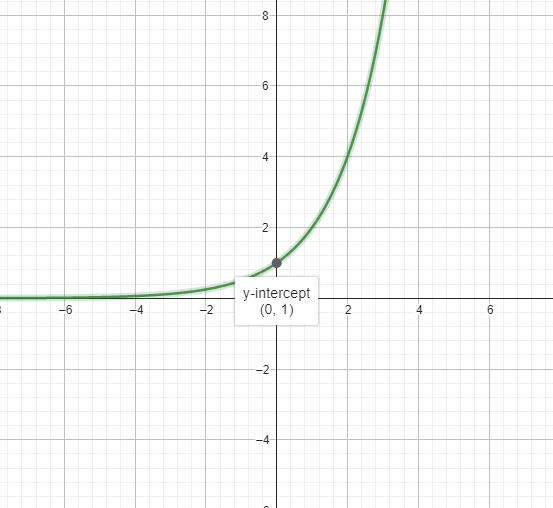
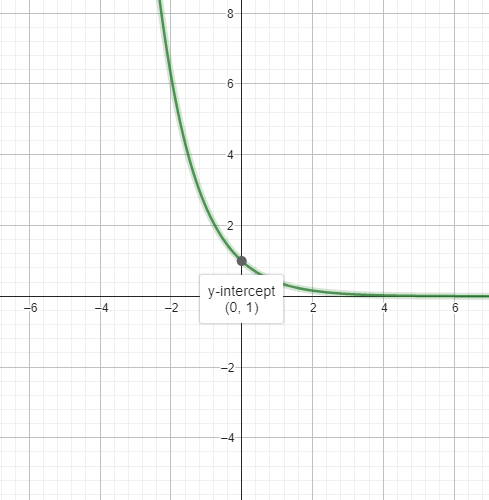
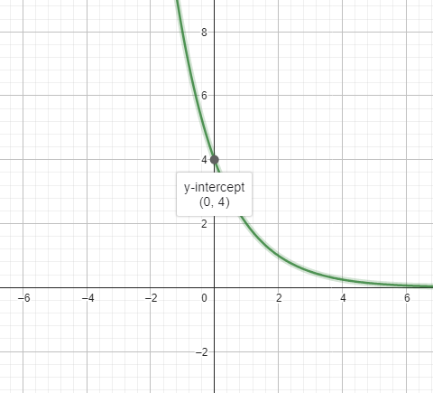
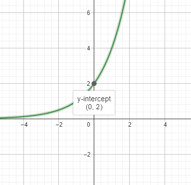

Função Exponencial
Autoavaliação
Ao contrário dos outros conteúdos, este conteúdo eu não havia estudados nos anos anteriores, mas mesmo assim tive facilidade de entender.
Introdução
O formato das funções expónenciais é: b ⋅ ax, sendo a e b números reais.
Por exemplo, a função f(x) = 5 ⋅ 3x.
Neste conteúdo foram estudados os seguintes conteúdos:
- Função Exponencial
- Revisão de Potenciação
- Raiz n-ésima
- Gráfico da Função Exponencial
Revisão de Exponenciação
Sendo a um número positivo:
an = a ⋅ a ⋅ a ⋅ ... ⋅ a ⋅ a (n vezes)
am ⋅ an = am + n
(am)n = amn
a-n = 1 / an
am : an = am - n
Raiz n-ésima
Sendo a um real positivo e n um número maior que 1:

Fonte: Arquivo do professor
Gráfico Função Exponencial
Algo importante é saber que caso o valor a esteja entre 0 e 1, o gráfico será decrescente, caso seja maior ou igual a 1, será crescente.
Para desenhar o gráfico de uma função exponencial, basta marcar os pontos, substituindo x por números reais e por fim traçar uma linha unindo os pontos.
Veja os exemplos abaixo:
f(x) = 2x
Fonte: https://www.geogebra.org/calculator
f(x) = (2/5)x
Fonte: https://www.geogebra.org/calculator
Como podemos ver, os gráficos NUNCA encostam no eixo X e NUNCA tem pontos nos quadrantes III e IV, pois não é possivel algum valor ser negativo.
Além disso, nestes gráficos, o momento que tocam no eixo Y é quando o X é 0, resultando em 1, pois não tem valor b em ambas as funções.
Aqui alguns exemplos com valor b não nulo:
f(x) = 4 ⋅ (1/2)x
Fonte: https://www.geogebra.org/calculator
f(x) = 2 ⋅ 2x
Fonte: https://www.geogebra.org/calculator
Voltar ao início